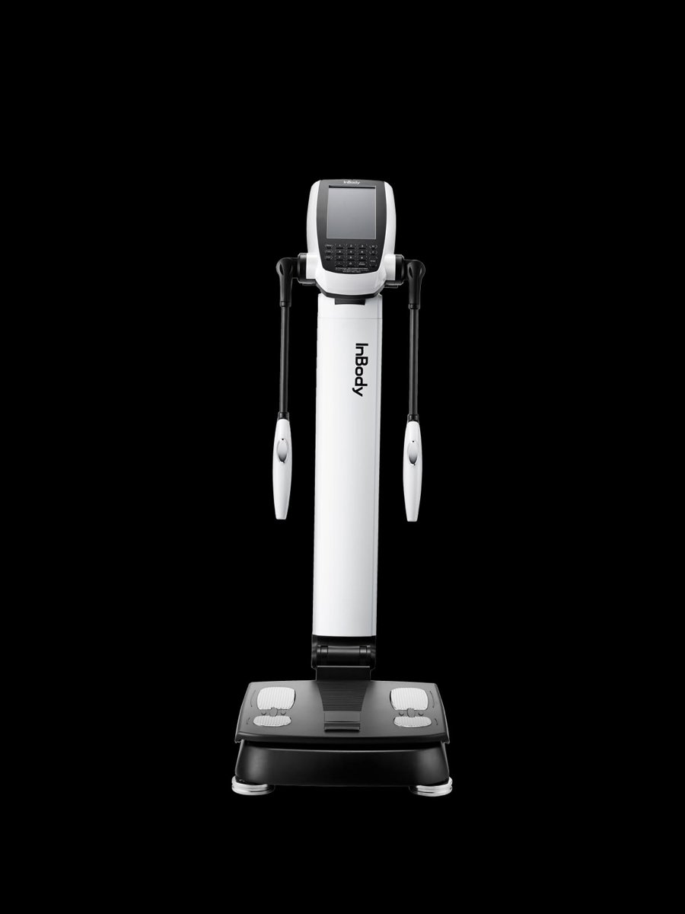

Licenciada en Nutrición
Nutrición con enfoque integral, sin obsesión con la balanza.
Trabajo el descenso de peso mirando a la persona completa: hábitos, descanso, relación con la comida y composición corporal. Un plan que se adapta a tu vida, con acompañamiento consulta a consulta.

Enfoque
Bajar de peso sin que la balanza dirija tu vida
Hay muchas formas de perder kilos. Pocas se sostienen. Mi trabajo es que el cambio sea real, gradual y compatible con cómo vivís.
01
Descenso de peso sostenible
Sin dietas de moda ni restricciones extremas. Cambios progresivos que se puedan mantener en el tiempo, sin efecto rebote.
02
Enfoque integral
Lo que comés es una parte. También miramos el descanso, la actividad, el estrés y tu relación con la comida.
03
No peso‑centrista
El número de la balanza no cuenta toda la historia. Seguimos lo que importa: músculo, grasa, hidratación y cómo te sentís.
Cómo es la consulta
Escuchar primero, medir después
La primera consulta dura alrededor de una hora. Es presencial en Las Cañitas o virtual, y en las dos modalidades salís con un plan concreto.
Tu historia y tus objetivos
Antecedentes, hábitos, rutina, qué probaste antes y qué querés lograr. De acá sale el punto de partida.
Medición de composición corporal
En el consultorio hacemos una medición con InBody: masa muscular, grasa, agua y su distribución. Son 15 minutos y el informe te lo llevás.
Plan de acción personalizado
Una propuesta de alimentación pensada para vos, con objetivos claros para las próximas semanas. Realista, no perfecta.
Seguimiento
Consultas de control para ajustar el plan y volver a medir. Ahí es donde el cambio se consolida.

Herramienta · InBodyLa herramienta
Medir lo que la balanza no ve
Una balanza te da un número. El InBody muestra de qué está hecho ese número, y eso cambia las decisiones: qué priorizar, cómo entrenar y cómo saber si el plan está funcionando.
La medición está incluida en las consultas presenciales. También podés hacer solo la medición, con informe.
Sobre mí
“Quiero que salgas de la consulta entendiendo tu cuerpo, no con una lista de prohibiciones.”
Soy Mayra Farfán, Licenciada en Nutrición. Atiendo en mi consultorio de Las Cañitas y de forma virtual, y me especializo en descenso de peso con un enfoque integral y no peso‑centrista.
Trabajo con personas que ya probaron varias dietas y quieren algo distinto: un proceso que respete su ritmo, su historia y su relación con la comida. Incorporé la medición de composición corporal porque permite tomar decisiones con datos reales y ver progresos que la balanza no muestra.
Honorarios · Valores 2026
Consultas y packs
Tocá cualquier opción para consultar disponibilidad por WhatsApp.
Packs · Validez 4 meses desde la compra
Pack inicial
Primera consulta + 3 seguimientos
Presencial, con InBodyPack seguimiento
4 sesiones, renovación de seguimiento
Presencial, con InBodyPack solo InBody
4 mediciones de composición corporal
PresencialPacientes
“Me atiendo hace unos meses con Mayra y tuve excelentes resultados en mi cambio de composición.”
Julieta · Google“Desde el primer momento me sentí súper cómoda y escuchada. No se trata simplemente de seguir una dieta.”
Paciente · Google“Me cambió totalmente mis hábitos. La paciencia y la amabilidad con la que me atendió me hicieron crear un vínculo mucho más sano con la comida.”
Agustina · GoogleConsultorio
Las Cañitas, Palermo
- Dirección
- Migueletes 1082
esq. Olleros · Las Cañitas, CABA - Horarios
- Lunes a viernes, 9 a 18 h
- Turnos
- WhatsApp +54 9 11 3203‑9633
- @nutri.maychu
Si tenés medición InBody, antes de venir
- 2 a 3 horas sin comer ni tomar líquidos
- Ropa liviana (podés traer short y top para cambiarte)
- Sin reloj, pulseras ni anillos: el metal interfiere con la lectura
Turnos
Empecemos por una consulta
Escribime por WhatsApp y coordinamos día, horario y modalidad. Te respondo en el día.
Escribir por WhatsApp+54 9 11 3203 9633